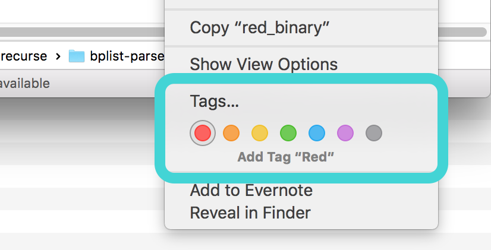
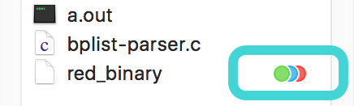
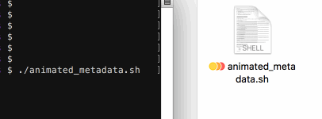

~~~~ ~ ~ how to animate color tags in Finder ~ ~ ~~~~
:: right click on a file in Finder to display and add color tags ::

a file can be taged with all 7 colors

but only up to 3 tags can be displayed at a time
steps to animate tags:
1. copy the script below and paste contents into a file animated_metadata.sh
2. open Terminal and navigate to animated_metadata.sh's directory
3. run $ sudo chmod 755 animated_metadata.sh
4. open a Finder window and navigate to animated_metadata.sh's directory
5. place Finder window and Terminal window side by side
6. run $ ./animated_metadata.sh
or run $ ./animated_metadata.sh [path to file on which to animate colors] [number of animation loops]

#!/bin/bash
# this script "animates" color metatags in mac OSX finder windows
# usage: $ ./animated_metadata.sh [path to file on which to animate colors] [number of animation loops]
# TODO / "FEATURES":
# - automatically open and set appropriate Finder window in focus
# - stop "dropping frames"
# - figure out how to display more than 3 color metatags
# shout outs:
# - http://nshipster.com/extended-file-attributes/
# - http://arstechnica.com/apple/2013/10/os-x-10-9/9/
########################################
############## HEX VALUES ##############
########################################
# to grab pure hex values
# $ ruby -e 'puts `xattr -px [com.your.metadataKey] [filename]`.to_s.gsub(" ","").gsub("\n","")'
# com.apple.metadata:_kMDItemUserTags
# com.apple.FinderInfo
RED=62706C6973743030A101555265640A36080A0000000000000101000000000000000200000000000000000000000000000010;
RED_finder=0000000000000000000C00000000000000000000000000000000000000000000;
O_R=62706C6973743030A20102555265640A36584F72616E67650A37080B11000000000000010100000000000000030000000000000000000000000000001A;
O_R_finder=0000000000000000000E00000000000000000000000000000000000000000000;
Y_O_R=62706C6973743030A3010203555265640A36584F72616E67650A375859656C6C6F770A35080C121B0000000000000101000000000000000400000000000000000000000000000024;
Y_O_R_finder=0000000000000000000A00000000000000000000000000000000000000000000;
Gn_Y_O=62706C6973743030A3010203584F72616E67650A375859656C6C6F770A3557477265656E0A32080C151E0000000000000101000000000000000400000000000000000000000000000026;
Gn_Y_O_finder=0000000000000000000400000000000000000000000000000000000000000000;
B_Gn_Y=62706C6973743030A30102035859656C6C6F770A3557477265656E0A3256426C75650A34080C151D0000000000000101000000000000000400000000000000000000000000000024;
B_Gn_Y_finder=0000000000000000000800000000000000000000000000000000000000000000;
P_B_Gn=62706C6973743030A301020357477265656E0A3256426C75650A3458507572706C650A33080C141B0000000000000101000000000000000400000000000000000000000000000024;
P_B_Gn_finder=0000000000000000000600000000000000000000000000000000000000000000;
Gy_P_B=62706C6973743030A301020356426C75650A3458507572706C650A3356477261790A31080C131C0000000000000101000000000000000400000000000000000000000000000023;
Gy_P_B_finder=0000000000000000000200000000000000000000000000000000000000000000;
R_Gy_P=62706C6973743030A301020358507572706C650A3356477261790A31555265640A36080C151C0000000000000101000000000000000400000000000000000000000000000022;
R_Gy_P_finder=0000000000000000000C00000000000000000000000000000000000000000000;
O_R_Gy=62706C6973743030A301020356477261790A31555265640A36584F72616E67650A37080C13190000000000000101000000000000000400000000000000000000000000000022;
O_R_Gy_finder=0000000000000000000E00000000000000000000000000000000000000000000;
Gy_P=62706C6973743030A2010258507572706C650A3356477261790A31080B14000000000000010100000000000000030000000000000000000000000000001B;
Gy_P_finder=0000000000000000000200000000000000000000000000000000000000000000;
GREY=62706C6973743030A10156477261790A31080A0000000000000101000000000000000200000000000000000000000000000011;
GREY_finder=0000000000000000000200000000000000000000000000000000000000000000;
########################################
#### SET GLOBALS & DEFINE FUNCTIONS ####
########################################
### set up metadata arrays to iterate through:
# color tag metadata arrays
intro=($red
$red
$O_R $Y_O_R
$Gn_Y_O
$B_Gn_Y
$P_B_Gn);
loop=($Gy_P_B
$R_Gy_P
$O_R_Gy
$Y_O_R
$Gn_Y_O
$B_Gn_Y
$P_B_Gn);
outro=($Gy_P_B
$Gy_P
$GREY);
# finder metadata arrays
intro_finder=($RED_finder
$RED_finder
$O_R_finder
$Y_O_R_finder
$Gn_Y_O_finder
$B_Gn_Y_finder
$P_B_Gn_finder);
loop_finder=($Gy_P_B_finder
$R_Gy_P_finder
$O_R_Gy_finder
$Y_O_R_finder
$Gn_Y_O_finder
$B_Gn_Y_finder
$P_B_Gn_finder);
outro_finder=($Gy_P_B_finder
$Gy_P_finder
$GREY_finder);
### handle script arguments:
# if path/to/file argument is invalid, animate this script file
if [ -f "$1" ]; then
file_to_animate="$1";
else
file_to_animate="$0";
fi
# if number of loops argument is invalid, default to two loops
number_regex='^[0-9]+$';
if [[ "$2" =~ $number_regex ]]; then
loops="$2";
else
loops=2;
fi
### function definitions:
# write_metadata filename finder-metadata color-tag-metadata
write_metadata ()
{
# real magic happens here
xattr -wx com.apple.FinderInfo "$2" "$1";
xattr -wx com.apple.metadata:_kMDItemUserTags "$3" "$1";
}
# update_display path-to-error-file
update_display ()
{
# evaluate applescript and print out the results to the ether...
osascript -e 'tell application "Finder" to delete (make new folder at (front window))' > /dev/null 2>&1;
}
########################################
############## ANIMATION ###############
########################################
# clear all tags to start
xattr -c $file_to_animate; # blank
wait;
##### intro
FINDER_i=0;
for i in "${intro[@]}"; do
write_metadata "$file_to_animate" "${intro_finder[$FINDER_i ]}" "$i";
let "FINDER_i = $FINDER_i + 1";
update_display;
done
wait;
##### loop
COUNTER=0
while [ $COUNTER -lt $loops ]; do
FINDER_l=0
for i in "${loop[@]}"; do
write_metadata "$file_to_animate" "${loop_finder[$FINDER_l ]}" "$i";
let "FINDER_l = $FINDER_l + 1";
update_display;
done
let COUNTER+=1;
done
wait;
##### outro
FINDER_o=0;
for i in "${outro[@]}"; do
write_metadata "$file_to_animate" "${outro_finder[$FINDER_o ]}" "$i";
let "FINDER_o = $FINDER_o + 1";
update_display;
done
wait;
# clear all tags again
xattr -c $file_to_animate; # blank
update_display;